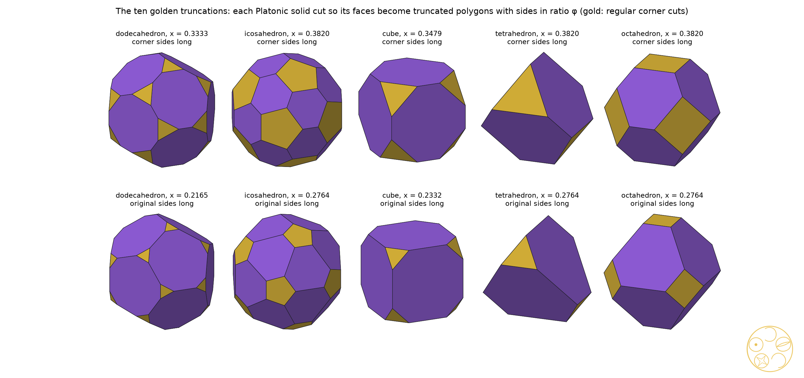

The DICTO‑Kepler golden truncations and the DICTO‑GTT‑Solids: ten Greater and Lesser Golden Cut solids; at the octahedron, Icosaxes and Unborn Axes, which fill space and are sections of the 24-cell
Version 3 corrects the notes on methods: the names of our computers and private file paths are removed, with small wording fixes. No result changes.
Cut the corners off a regular solid and its faces change shape. Cut every corner by the same golden amount and each face keeps exactly one golden proportion. For each regular solid there are just two such cuts; for the octahedron they give two of DICTO's own solids, which pack together to fill space, and which also appear when a four-dimensional regular solid is sliced at golden heights.
DICTO noticed that many of his newly found solids have faces of one particular kind: a hexagon that looks like a triangle with its corners cut off. The shape is the truncated triangle (Coxeter t{3}): six angles of 120°, sides alternating a, b, a, b, a, b; its symmetry is ditrigonal. DICTO first used it in #20, The FUJI Family [1]. This paper asks why it recurs. The answer has three parts: it recurs exactly (Section 3), it is what golden cuts of the regular solids produce (Section 4), and those cuts are sections of the regular four-dimensional solids (Section 6). At the octahedron the golden cuts are DICTO's space-filling pair (Section 5).
A truncated polygon is a 2n-gon cut from a regular n-gon by cutting every corner equally; its sides alternate between two lengths. For n = 3 it is a truncated triangle. Its ratio is long side over short side; the regular case has ratio 1. A Platonic solid of edge 1 cut at x (0 < x < ½) is what remains after every corner is cut off by the plane through the points at distance x from that corner along its edges, the same x at every corner. For x < ½ the cuts of different corners do not meet inside the solid, so each corner becomes a regular polygon of side kx, where k = 2 sin(α/2) for the face angle α: k = 1 for solids of triangles, √2 for the cube and φ for the dodecahedron. Each original face becomes a truncated polygon with sides kx (shared with a corner) and 1 − 2x (shared with another original face). The Archimedean truncations are the cuts at which these two sides are equal.
Theorem 1. Among the 69 solids of the DICTO Solids dataset (v7 [2]), every hexagonal face with 3-fold symmetry is a truncated triangle. It is regular in nine solids (Blockhead, DPHP, Ganesha, Ian Dury, the Ogdoecontahedron, PHE, the skewed ED-16, TQH and TQHD) and non-regular in nine (Table 1): eight single solids and the assembly Icosaxes Hexa (Section 8); every non-regular ratio lies in Q(√5), and it is exactly φ for Icosaxes, Unborn Axes and White Knight, the members of the DICTO-GTT-Solids.
Proof. Exact computation in sympy from the dataset's exact coordinates in Q(√5): for every hexagonal face the six angles are tested for exactly 120° ((u·v)² = |u|²|v|²/4 with u·v < 0) and the sides for exact alternation, and the ratio is simplified exactly (fet_proof.py); the symmetry of every hexagonal face as a plane polygon is classified separately (symmetry_census.py). No hexagon has a bare 3-fold rotation without mirrors. ∎
The other hexagons: centrally symmetric hexagons occur in nine solids (Cube Pearl, Ian Dury, OCD Stella, Red King, Samson, the skewed ED-16 and ED-18, Sonsam, Triskelion Tetrahedron), hexagons with a single mirror in five (Ganesha, Haigha, Hatta, PHE, Walrus) and hexagons with no symmetry in two (Ophelia, Hatta); a solid can carry several kinds.
| Solid | Faces | Ratio (exact) |
|---|---|---|
| Icosaxes Hexa (assembly: 8 Icosaxes + 1 Unborn Axes) | 56 | φ = (1+√5)/2 |
| White Knight | 20 | φ |
| Icosaxes | 8 | φ |
| Unborn Axes | 8 | φ |
| TI Star core | 20 | √5 |
| DICTO GTI | 20 | 1 + 3√5/5 |
| Golden Clasp | 8 | (7 + 3√5)/4 = φ⁴/2 |
| Haigha | 2 | (1 + 2√5)/5 |
| Hatta | 2 | (5 + 4√5)/11 |
Table 1. The solids of the dataset with non-regular truncated-triangle faces. Ratio exactly φ: the DICTO-GTT-Solids Icosaxes, Unborn Axes and White Knight, and their assembly Icosaxes Hexa; the other five have ratios from the golden field Q(√5) but not φ.
Theorem 2. For each Platonic solid there are exactly two cuts x at which every original face becomes a truncated polygon with ratio φ: x = φ/(k + 2φ), where the sides shared with the corners are the long ones, and x = 1/(φk + 2), where the original sides are the long ones. This gives ten solids, the DICTO-Kepler golden truncations (Table 2). The deeper of the two cuts gives the Greater Golden Cut solid, with the larger corner faces; the lighter gives the Lesser Golden Cut solid. For the octahedron (k = 1) they are DICTO's Icosaxes (x = 1/φ², greater) and Unborn Axes (x = 1/(φ√5), lesser).
Proof. With the same cut x at every corner, the two sides of a truncated face are kx and 1 − 2x. The ratio is φ exactly when kx = φ(1 − 2x) or 1 − 2x = φkx. Each equation is linear in x with one root, and for every k > 0 both roots lie in (0, ½); the first is the larger. For k = 1, φ/(1 + 2φ) = 1/φ² and 1/(φ + 2) = 1/(φ√5), using φ + 2 = φ√5. The identification with Icosaxes and Unborn Axes: in coordinates where the octahedron is |x| + |y| + |z| ≤ 1 and the cut is |x|, |y|, |z| ≤ c, the hexagon sides are √2(2c − 1) and √2(1 − c); c = 1/φ and c = φ²/(φ + 2) give the squared cutting depths 3/φ² and 3φ²/5, the exact depths of Icosaxes and Unborn Axes computed independently from the dataset. All ten ratios were also checked symbolically equal to φ and all ten volumes computed exactly (golden_cuts_exact.py). ∎
| Platonic solid (DICTO order) | Greater Golden Cut (corner sides long) | Lesser Golden Cut (original sides long) | Faces |
|---|---|---|---|
| Dodecahedron | Greater Golden Cut Dodecahedron, x = 1/3 | Lesser Golden Cut Dodecahedron, x = (7 − √5)/22 ≈ 0.2165 | 20 triangles, 12 truncated pentagons |
| Icosahedron | Greater Golden Cut Icosahedron, x = 1/φ² | Lesser Golden Cut Icosahedron, x = 1/(φ√5) | 12 pentagons, 20 truncated triangles |
| Cube | Greater Golden Cut Cube, x ≈ 0.3479 | Lesser Golden Cut Cube, x ≈ 0.2332 | 8 triangles, 6 truncated squares |
| Tetrahedron | Greater Golden Cut Tetrahedron, x = 1/φ² | Lesser Golden Cut Tetrahedron, x = 1/(φ√5) | 4 triangles, 4 truncated triangles |
| Octahedron | Icosaxes (greater), x = 1/φ² | Unborn Axes (lesser), x = 1/(φ√5) | 6 squares, 8 truncated triangles |
Table 2. The ten DICTO-Kepler golden truncations (edge 1). Exact cuts and volumes for the cube pair are in golden-cuts-exact.md. The Greater Golden Cut Dodecahedron's cut x = 1/3 trisects every edge, the same fraction that gives the Archimedean truncated icosahedron from the icosahedron. DICTO's GTI, despite its name, is not one of the ten: its ratio is 1 + 3√5/5.

Aristotle wrote that among solids the pyramid and the cube fill space (#44 [3]). Koca et al. [4] describe the semi-uniform truncated octahedra T(x), the convex hulls of all permutations of (±(1 + x), ±x, 0), and among them the non-regular ones at x = τ and x = 1/τ (τ = φ); the Polytope Wiki [5] lists the semi-uniform truncated octahedron. In #48 [6] DICTO showed that T(x) and T(1/x) together fill space for every x > 0, from Kelvin's cell (x = 1) to the golden pair (x = τ), and that cutting the icosahedra and Unborns at the golden point gives exactly this pair as two convex solids, Icosaxes and Unborn Axes, the only cut at which both are convex; their volumes there are 1 + 2√5/3 and 1 + √5/3. Theorem 2 singles the same pair out from another side: among all truncations of the octahedron they are exactly the two whose faces are golden.
Theorem 3. Slice the 24-cell, or the 120-cell, by hyperplanes perpendicular to the line from its centre to the centre of one cell, and measure the height t as a fraction of the distance from the centre to that cell's centre. (a) In the 24-cell every section with 0 < t < 1 is a truncated octahedron; it is Archimedean at t = 1/2, Icosaxes at t = 1/φ² and Unborn Axes at t = 1/φ. (b) In the 120-cell the sections at t = 1/φ², 1/2 and 1/φ are the Greater Golden Cut Icosahedron, the Archimedean truncated icosahedron and the Lesser Golden Cut Icosahedron.
Proof. (a) Take the 24-cell with corners at all permutations of (±1, ±1, 0, 0); the point (1, 0, 0, 0) is the centre of an octahedral cell, at distance 1, so the section at height t is the hyperplane x₁ = t. For 0 < t < 1 the only edges that cross it join a corner (1, a) to a corner (0, a + c), where a and c are perpendicular unit vectors along coordinate axes (edge length √2). The crossing point is a + (1 − t)c, and these 24 points are the permutations of (0, ±1, ±(1 − t)). With s = 1 − t each hexagon has sides √2(1 − s), shared with another hexagon, and √2 s, shared with a square; the squares are regular. The ratio is φ exactly when s = 1/φ (t = 1/φ², square-shared sides long: Icosaxes) or s = 1/φ² (t = 1/φ, hexagon-shared sides long: Unborn Axes); s = 1/2 gives equal sides. (b) In the exact atlas of the 120-cell's sections of #65 [7] (exact in Q(√5)), the cell-first sections at heights 9/16 + √5/4, 47/64 + 21√5/64 and 29/32 + 13√5/32 (atlas units), divided by the distance to the cell centre, 47/32 + 21√5/32, are at t = 1/φ², 1/2 and 1/φ. An exact comparison in Q(√5) of all scale-free distances between corners (exact_cmp.py) shows that the outer two are congruent, up to scale, to the icosahedron cut at x = 1/φ² and at x = 1/(φ√5); the middle one has 90 equal edges. ∎
These series of sections are classical: Alicia Boole Stott [8] cut all six regular four-dimensional solids in such series and drew the sections, among them the 120-cell's layers parallel to one cell. What we add is that the golden pairs appear in them, and that they do so at the same fractions 1/φ² and 1/φ in the 24-cell and in the 120-cell. Several of DICTO's solids were already defined as sections in #65 [7]: White Knight is the 120-cell's cell-first section at t = 1/(2φ) (atlas height 29/64 + 13√5/64), and our check confirms it (all 7,140 scale-free distances agree; White Knight is that section enlarged by φ⁴/4); what is new is that its edges are in ratio φ and its 20 hexagons are truncated triangles. Haigha and Hatta, which DICTO noticed resemble the golden truncated icosahedra, are the 120-cell's edge-first sections at atlas heights 3/64 + √5/64 and 7/64 + 3√5/64: Haigha carries the same 12 pentagons and 20 hexagons, but with only a 3-fold axis its faces are tilted off the icosahedral directions.
A search of all six regular four-dimensional solids. We sliced the 5-cell, 8-cell, 16-cell, 24-cell, 600-cell and 120-cell at 2,400 heights in each of their four main directions (vertex-, edge-, face- and cell-first) and compared every convex solid of the dataset with every section, scale-free (slices4d.py, floating point). Besides the solids already defined as sections in #63 and #65, which the search found again, two solids of Table 1 appear: the TI Star core is the 120-cell's cell-first section at t = 3(√5 − 2) (atlas height 33/32 + 15√5/32; exact comparison in Q(√5)), and Icosaxes appears a second time, as the 120-cell's vertex-first section at φ/2 of the way to the corner (atlas height 11/8 + 5√5/8; checked exactly: its 24 corners match Icosaxes corner for corner, every squared distance in the same ratio 3 − √5, in Q(√5); s7_icosaxes_exact.py in the #89 study), a section with octahedral symmetry cut from the icosahedral 120-cell. Golden Clasp, the GTI and Unborn Axes (outside the 24-cell) were not found in these directions.
Four of the members are exact truncations of a Platonic solid. Their cutting depths (the ratio of the distances from the centre of the two kinds of face plane; squared, exact) lie in Q(√5); only the octahedral pair is golden in the sense of Theorem 2:
| Solid | Pattern | Depth² | Cut x (edge 1) | Archimedean depth² |
|---|---|---|---|---|
| Icosaxes | truncated octahedron | 3/φ² | 1/φ² | 4/3 |
| Unborn Axes | truncated octahedron | 3φ²/5 | 1/(φ√5) | 4/3 |
| DICTO GTI | truncated icosahedron | (5 + √5)/6 = φ√5/3 | 5/(15 + 3√5) ≈ 0.2303 | 13/3 − 22√5/15 |
| TI Star core | truncated icosahedron | (195 + 66√5)/361 | (10 − √5)/19 ≈ 0.4086 | 13/3 − 22√5/15 |
The other two follow the great truncation patterns with rectangles in place of squares: White Knight has 12 regular decagons, 20 truncated triangles of ratio φ and 30 rectangles (the truncated icosidodecahedron's pattern), and Golden Clasp 6 octagons, 8 truncated triangles of ratio φ⁴/2 and 12 rectangles (the truncated cuboctahedron's). Two cross-links: Golden Clasp's hexagon-to-octagon depth² is 3/φ², the depth of Icosaxes; and White Knight's hexagon-to-decagon depth² is 13/3 − 22√5/15, the Archimedean truncated icosahedron's own value.
Following DICTO's naming rule (DICTO plus the defining feature): the DICTO-GTT-Solids are the single solids whose truncated triangles have ratio exactly φ: Icosaxes, Unborn Axes and White Knight (the GTI, the TI Star core, Golden Clasp, Haigha and Hatta carry truncated triangles with other ratios from the golden field and are not members); the DICTO-Kepler golden truncations are the ten of Theorem 2 (the Greater and Lesser Golden Cut solids; at the octahedron, Icosaxes and Unborn Axes), named for Kepler, who described the Archimedean truncations in Harmonices Mundi (1619) [9]. Icosaxes and Unborn Axes belong to both and, filling space together, to DICTO's third family, the DICTO Equilibrium Space-Fillers, to be set out in a later paper.
Members and assemblies. A family counts single solids. An assembly is a solid built from copies of family members, touching or passing into each other; assemblies are listed with the family, not counted as members, since otherwise every arrangement of Icosaxes and Unborn Axes would join it. Icosaxes Hexa is such an assembly: nine Icosaxes passing into each other, the middle one reduced to an Unborn Axes (volume 9 + 17√5/3 = 8 × (1 + 2√5/3) + (1 + √5/3)) [10]. So are the stages of #59 [10], twenty Icosaxes brought in from the corners of a dodecahedron: Bloom, Bud and Seed each keep truncated triangles of ratio φ on the outside (twenty or more, the outward hexagons), the rest of their faces clipped where the pieces meet. The Lotus Jewel and keyed assemblies of the same study carry none.
Known: truncation at any depth is classical, and Kepler [9] described the Archimedean truncations. The two golden truncated octahedra as shapes are Koca et al.'s non-regular truncated octahedra x = τ and 1/τ [4] (the semi-uniform truncated octahedron [5]), as #48 [6] already noted; that T(x) and T(1/x) fill space together is #48's Theorem 4. The series of sections of the regular four-dimensional solids are Stott's [8]. Truncated icosahedra with two edge lengths, whose hexagons are truncated triangles, are familiar from fullerene chemistry, where the C₆₀ molecule has two bond lengths (not in golden ratio). Non-uniform truncations of the Platonic and Archimedean solids have been studied (Zefiro [11]). Lalvani's patent [12] speaks of a "φ-truncated icosahedron" in a building system without defining its depth or faces, so we cannot say whether it is one of the ten.
New within these checks: the rule that every original face be golden and its exactly two solutions for each Platonic solid, with the eight Golden Cut solids other than the octahedral pair; the census of Theorem 1; the observation that the golden pairs are sections of the 24-cell and the 120-cell at the same fractions 1/φ² and 1/φ (Theorem 3), and that White Knight, the TI Star core and Icosaxes are further 120-cell sections with golden-field ratios; and the cutting depths of Section 7. Where an earlier source turns out to describe a member, that member stays in DICTO's family, found independently, with the earlier source cited.
Sources checked (2–3 November 2026). Reference library (ask-library, meaning search, top hits per query): one query under DICTO's earlier informal name for the shape; "truncated triangle face semiregular hexagon alternating sides"; "hexagonal faces with alternating edge lengths golden ratio polyhedron"; "polyhedra with ditrigonal or 3-fold symmetric hexagonal faces"; "golden hexagon icosahedral polyhedron faces"; "truncated tetrahedron non-regular hexagon faces golden"; "truncation of Platonic solid at golden ratio depth"; "truncated icosahedron hexagons with edge lengths in golden ratio"; "golden truncated tetrahedron non-regular hexagons"; "truncated cube octagons alternating edge lengths golden ratio"; "truncated dodecahedron edges trisected decagons"; "non-Archimedean truncation depth of polyhedra family parameter"; "polyhedra with two edge lengths in golden ratio icosahedral"; "truncated octahedron golden ratio space filling pair". Hits read for relevance: Kepler 1619 (pp. 72, 88, 89, 271–273); Pacioli 1509 (pp. 107, 115); Goldberg 1937; Al-Siyabi, Koca and Koca 2020; Johnson 1966; Senechal 2004; Betke–Henk 2000; Torquato–Jiao 2009; Fedorov 1885 ch. 13; Boole Stott 1900. Also: DICTO #48 and its references; Koca et al. 2015 (read in full: eq. 49 is the family T(x) of non-regular truncated octahedra; no golden truncations of the other Platonic solids) and Al-Siyabi, Koca and Koca 2020 (read in full: the uniform Archimedean solids as orbits of D6; no golden truncations); Polytope Wiki; DICTO #59, #63, #65. Web: Wikipedia "Truncated octahedron", "Truncated cube", "Ditrigonal polyhedron", "Truncated triangular trapezohedron"; MathWorld "Truncation"; Zefiro 2011 (Visual Mathematics); US patent 4,723,382 (Google Patents text).
The truncated triangle recurs in DICTO's solids because golden cuts of the regular solids make it. For each regular solid exactly two golden cuts exist; for the octahedron they are DICTO's Icosaxes and Unborn Axes, Koca's semi-uniform truncated octahedra at τ and 1/τ, the pair that fills space, and in the 24-cell and the 120-cell both golden pairs sit at the same golden heights either side of the Archimedean section.
Data and code. papers/golden-truncated-triangles: fet_proof.py and symmetry_census.py (Theorem 1, exact), trunc_exact.py (cutting depths, exact), golden_cuts.py and golden_cuts_exact.py (Theorem 2: the ten solids, exact sides, ratios and volumes), slice24.py (numerical sweep of the 24-cell sections, confirming Theorem 3(a)), exact_cmp.py (Theorem 3(b), exact), slices4d.py (the search of Section 6, floating point), tisc_check.py, two_checks.py and wk_check.py (individual sections), tt_figs.py (Figure 1), stage_faces.py (faces of the #59 assemblies). The 120-cell sections are from the exact atlas of #65 (studies/2026-10-27-white-queen-polar, data/atlas120.json). DICTO Solids v7 [2].
[1] DICTO, "The FUJI Family", paper #20, DICTO DOI: 10.5281/zenodo.23357896 (2026).
[2] DICTO, "DICTO Solids: exact geometry", dataset, version 7, DICTO DOI: 10.5281/zenodo.23850845 (concept 10.5281/zenodo.23606967) (2026).
[3] DICTO, "Aristotle's Pyramid", paper #44, DICTO DOI: 10.5281/zenodo.23529497 (2026).
[4] N. O. Koca, M. Koca, A. Al-Mukhaini, A. Al-Qanobi, "Quaternionic representations of the pyritohedral group, related polyhedra and lattices", arXiv:1506.04600 (2015), eq. 49; published as "Symmetry of the pyritohedron and lattices", SQU Journal for Science 21(2) (2016) 139–149, doi:10.24200/squjs.vol21iss2pp139-149.
[5] Polytope Wiki, "Truncated octahedron" (semi-uniform truncated octahedron), https://polytope.miraheze.org (viewed 3 November 2026).
[6] DICTO, "The Golden Split: Icosahedra, Unborns and AXE Become Two Convex Space-Fillers", paper #48, DICTO DOI: 10.5281/zenodo.23596362 (2026).
[7] DICTO, "The Red Queen 120-cell: Aristotle's five pyramids as the cores of the regular four-dimensional solids", paper #65, DICTO DOI: 10.5281/zenodo.23716140 (2026).
[8] A. Boole Stott, "On certain series of sections of the regular four-dimensional hypersolids", Verhandelingen der Koninklijke Akademie van Wetenschappen te Amsterdam, Eerste Sectie, 7, no. 3 (1900).
[9] J. Kepler, Harmonices Mundi, Linz (1619), Book II.
[10] DICTO, "The Icosaxes Hexa: Bloom, Bud and Seed", paper #59, DICTO DOI: 10.5281/zenodo.23677485 (2026).
[11] L. Zefiro, "Vertex- and edge-truncation of the Platonic and Archimedean solids leading to vertex-transitive polyhedra", Visual Mathematics 13(2) (2011), https://www.mi.sanu.ac.rs/vismath/zefirosept2011/_truncation_Archimedean_polyhedra.htm.
[12] H. Lalvani, "Building structures based on polygonal members and icosahedral", US patent 4,723,382 (filed 1986, granted 1988).